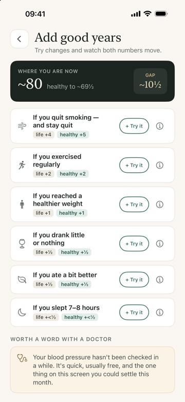
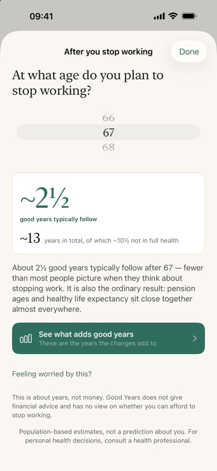
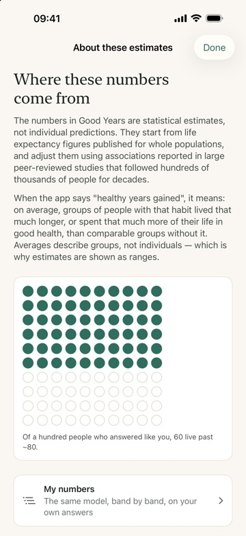

For iPhone. Nothing leaves the phone.
Two questions, answered together: how long people who answer the way you do tend to live, and how many of those years they typically spend in good health. The distance between them runs to about a decade across whole populations, and almost nobody knows roughly where their own sits.

Free. One optional purchase, no subscription.



Ten questions, about three minutes. Then two figures side by side, and a list of changes — each one drawn from studies that followed hundreds of thousands of people for decades, and priced in healthy years.
No account. No sign-in. No analytics, no advertising, no third-party code that collects anything. The app makes no network requests at all — it works in aeroplane mode, and the App Store privacy label reads “Data Not Collected”.
Deleting the app deletes everything there is, and there is a button in Settings if you would rather not wait.
Every figure the app uses has its source and its verification status on one page: how the numbers are made. That page also says what the model cannot know, and what has been corrected since.
Good Years is an educational wellness app. The estimates it shows are based on WHO population statistics and published long-term cohort studies — they describe averages across large groups of people and are shown as ranges, never as a prediction about any individual. Good Years does not provide medical advice, diagnosis, or treatment, and is not a substitute for consulting a health professional. Everything runs on your device: no account, no data collection, ever.